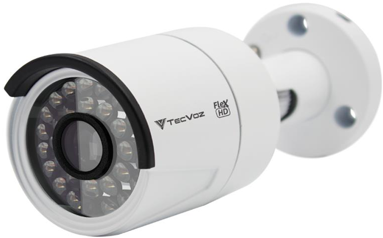
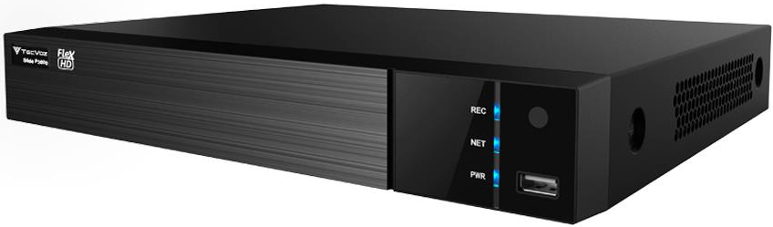

Câmera Bullet IR 25m - Flex HD

Caracteristicas
- 2.0 Mega Pixels - 1080p (0 Lux)
- Lente Fixa 3.6mm
- Smart IR / BLC / D-WDR
- Interno/Externo (IP66)
- Compatível com as tecnologias: HD-TVI / HD-CVI / AHD / CVBS
TW-P3008(m) - Gravador Digital Série P3000 - Flex HD

Caracteristicas
- Até 09 Canais
- Compressão H.264+
- Suporta câmeras de até 2 Mega Pixels
- Suporta câmeras IP de até 3 Mega Pixels
- Suporte a diversos protocolos do mercado
- Áudio bi-direcional / Alarme / RS-485 / Onvif
- Suporta HD de até 6TB
- Acesso via dispositivos móveis: Plataformas iOS e Android (App TW Viewer)
- Compatível com as tecnologias: HD-TVI / AHD / CVBS / IP